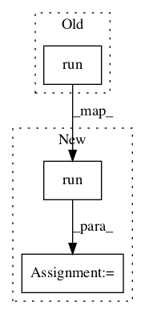

3ff2a365cc9ddd5faf8c9f3d1efafe5216cd10a7,async_knowledge_transfer.py,AKTThread,learn_REINFORCE,#AKTThread#,58

Before Change
// Do policy gradient update step
episode_rewards = np.array([trajectory["reward"].sum() for trajectory in trajectories]) // episode total rewards
episode_lengths = np.array([len(trajectory["reward"]) for trajectory in trajectories]) // episode lengths
self.master.session.run([self.add_accum_grad], feed_dict={
self.master.state: all_state,
self.master.action_taken: all_action,
self.master.advantage: all_adv
})
print("Task:", self.thread_id)
reporter.print_iteration_stats(iteration, episode_rewards, episode_lengths, total_n_trajectories)
self.master.session.run([self.master.apply_gradients])
After Change
// Do policy gradient update step
episode_rewards = np.array([trajectory["reward"].sum() for trajectory in trajectories]) // episode total rewards
episode_lengths = np.array([len(trajectory["reward"]) for trajectory in trajectories]) // episode lengths
results = self.master.session.run([self.loss, self.add_accum_grad], feed_dict={
self.master.states: all_state,
self.master.action_taken: all_action,
self.master.advantage: all_adv
})
print("Task:", self.thread_id)
reporter.print_iteration_stats(iteration, episode_rewards, episode_lengths, total_n_trajectories)
results = self.master.session.run([self.master.summary_op], feed_dict={
self.master.loss: results[0],
self.master.reward: np.mean(episode_rewards),
self.master.episode_length: np.mean(episode_lengths)
})
self.writer.add_summary(results[0], iteration)
self.writer.flush()
self.master.session.run([self.master.apply_gradients])
In pattern: SUPERPATTERN
Frequency: 5
Non-data size: 3
Instances
Project Name: arnomoonens/yarll
Commit Name: 3ff2a365cc9ddd5faf8c9f3d1efafe5216cd10a7
Time:
Author: null
File Name: async_knowledge_transfer.py
Class Name: AKTThread
Method Name: learn_REINFORCE
Project Name: ex4sperans/mag
Commit Name: 129a781a4c640b7af6df37f9918464cf15a21034
Time:
Author: null
File Name: examples/mnist_tensorflow.py
Class Name: MnistClassifier
Method Name: _validation
Project Name: tensorlayer/tensorlayer
Commit Name: 5307ae3f7d1c4b6bd2285f946db82d944f3844db
Time:
Author: null
File Name: examples/text_classification/tutorial_imdb_fasttext.py
Class Name:
Method Name: train_test_and_save_model
Project Name: deepdrive/deepdrive
Commit Name: 3306e64d4ddfcc929b6f8bc9d73ac7228449dda3
Time:
Author: null
File Name: agents/dagger/agent.py
Class Name: Agent
Method Name: get_net_out
Project Name: tensorflow/ranking
Commit Name: 5866315165002fe9a07d45f00712081337f5a039
Time:
Author: null
File Name: tensorflow_ranking/python/data_test.py
Class Name: SequenceExampleTest
Method Name: test_parse_from_sequence_example_missing_feature_list